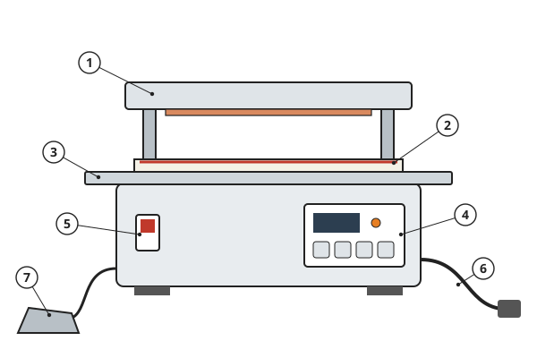

各部の名称
本体とフットスイッチの各部の名称と役割です。

| 番号 | 名称 | 役割 |
|---|---|---|
| 1 | 圧着バー | 下がって袋を押さえます。下面にシリコンゴムが付いています。 |
| 2 | シール部 | ヒーター線と、それを覆う耐熱シートです。袋を加熱して溶着します。 |
| 3 | 作業テーブル | 袋を置く台です。 |
| 4 | 操作パネル | シール温度と時間を設定します。 |
| 5 | 電源スイッチ | 本機の電源を入れたり切ったりします。 |
| 6 | 電源コード | アース付きのコンセントに接続します。 |
| 7 | フットスイッチ | 踏むと、シールを1回行います。 |